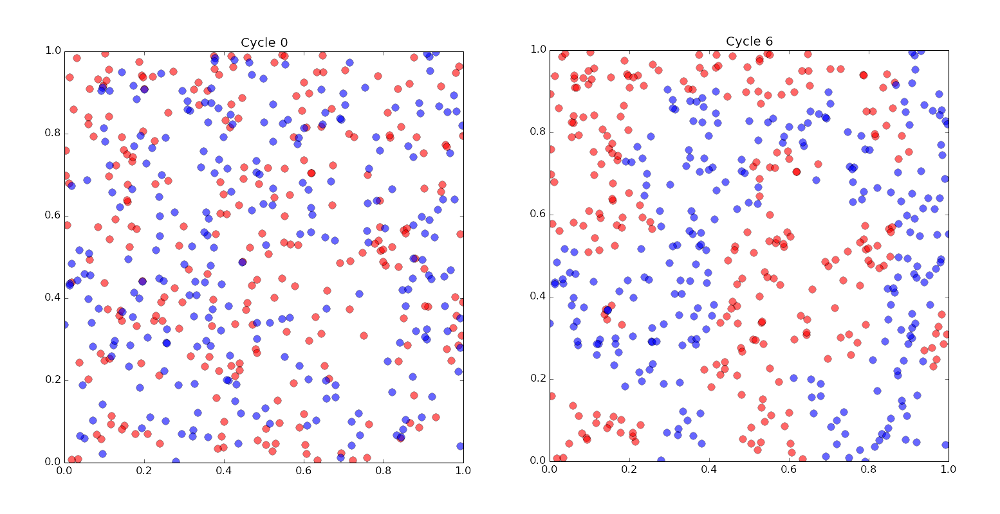

这两天看了刘慈欣的《三体》一和二（黑暗森林），作为经典的科幻作品，直到现在才开始看确实有点说不过去。主要原因可能还是自己这几年的阅读虚构类比重下降严重，更倾向于读非虚构作品，但谁又能说前者不是“真实世界”呢？对于《三体》，说实话第一部看完后印象一般，感觉有种过誉的嫌疑，从科幻上来说有一定功力，但总觉得缺了点什么，因为篇幅短（300页）无法建构一个完善的体系？但第二部给了我眼前一亮的感觉，可以给出5星，特别是其中的黑暗森林法则。不过这里想要先讨论一下大刘的几个宇宙文明公理和引力。
宇宙文明公理：1、生存是文明的第一需要；2、文明不断增长和扩张，但宇宙中的物质总量保持不变。
前者可能可以被认为是公理，但第二条却有待商榷。第二条似乎想在宇宙文明中引入达尔文物种繁殖->地球资源有限->适者生存的体系，但且不说这与第一条有部分重叠之嫌，单说文明是不是会不断增长和扩张就值得怀疑，在第一条成立的情况下，如果文明为了生存不得不衰退和收缩呢？会不会出现大规模的自杀现象？像部分动物中存在的那样？我们不知道。
另外作者还有两条引理，一个是猜疑链，一个是技术爆炸。其实猜疑链就是多次博弈，而三体与地球之间的猜疑可以被简化成一种囚徒困境，只不过地球发出了一个信息后（signal），三体拥有了占优策略。包括最后罗辑与三体文明的谈判，也是以要死两个文明一起死的方式亮出了底牌，这与大国争霸没什么不同，你有原子弹，我也有，要死一起死，最终都在一种命悬一线的微妙制衡。
宇宙中有没有其它生命，如果有，为什么我们到现在还不知道？对于这一问题，我认为大刘给出了一个我目前看到得最精彩的假设：
“真实的宇宙就是这么黑。”罗辑伸手挥挥，像抚摸天鹅缄般感受着黑暗的质感，“宇宙就是一座黑暗森林，每个文明都是带枪的猎人，像幽灵般潜行于林间，轻轻拨开挡路的树枝，竭力不让脚步发出一点儿声音，连呼吸都小心翼翼…… 他必须小心，因为林中到处都有与他一样潜行的猎人。如果他发现了别的生命，不管是不是猎人，不管是天使还是魔鬼，不管是娇嫩的婴儿还是步履蹒跚的老人，也不管是天仙般的少女还是天神般的男神，能做的只有一件事：开枪消灭之？在这片森林中，他人就是地狱，就是永恒的威胁，任何暴露自己存在的生命都将很快被消灭。这就是宇宙文明的图景，这就是对费米悖论的解释。” 在一篇南方周末的采访稿里提到一个细节：1990年代初，刘慈欣编写过一个软件，在这个软件里，宇宙中的每一个智慧文明都被简化为一个点。最多的时候，他在十万光年的半径里设定了三十万个文明，然后让那台286计算机花了几个小时来计算这些文明的演化图景。最后他得出的结论是：其诡异程度是很难凭空想出来的。
如果我没有猜错的话，大刘写得其实就是“生存游戏”，也就是元胞自动机（CA）。元胞世界的法则很简单，但可以演化出极其丰富的结果。自冯诺伊曼提出这个规则以来，有一些科学家倾向于相信这是世界万物的本质规律。简单但深刻。包括后来Mathematica的创始人Wolfram还曾经写过一本厚厚的书专门介绍这个“法则”。
我最近做的几件事情与简单的法则演化也很有关系，比如当年的谢林模型，说得是如果人们只是有一个很小的倾向：和自己的同类（种族、职业类似等）住在一起，也可能会产生比较严重的居住隔离。我重复了许多人的模拟：在一个平面内一开始随机分布了两种类型的“人”，他们是均匀混合的，但比如每个人有一个倾向，在周围8个人中，至少就3个和自己是同类就不移动，否则就“搬家”，直到满足前面的条件。这也是一种前面提到的元胞自动机，和大刘模拟的没有本质不同。结果是这样的：

经过几代之后，形成了比较明显的居住分隔。那么，我们的城市是不是由简单的规律主宰呢？
去年年底人物杂志问刘慈欣，你如何看待世界末日？
刘：如果所有人都会死，那就是一件能够平静接受的事。
（draft）